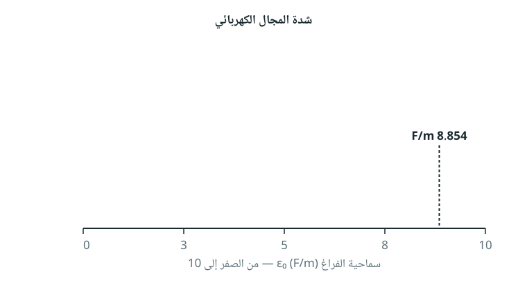

شدة المجال الكهربائي
Electric field strength
شدة المجال الكهربائي هي القوة الكهربائية المؤثرة على وحدة الشحنة عند نقطة، ورمزها E ووحدتها V/m أو N/C، وتُقاس بمقدار القوة على شحنة اختبار صغيرة مقسومة على تلك الشحنة.
شدة المجال الكهربائي E عند نقطة هي القوة الكهربائية F التي يؤثر بها المجال على شحنة اختبار q مقسومة على تلك الشحنة: E = F/q. ووحدتها النظامية فولت لكل متر (V/m)، وهي مكافئة لنيوتن لكل كولوم (N/C). المجال كمية متجهة، له مقدار واتجاه، واتجاهه هو اتجاه القوة على شحنة موجبة. لشحنة نقطية Q على مسافة r في الفراغ: E = Q/(4πε₀r²)، حيث ε₀ سماحية الفراغ. مثال: شحنة 1.00 μC على مسافة 0.100 m تولّد مجالاً E = 1.00×10⁻⁶/(4π × 8.854 187 8128×10⁻¹² × 0.0100) = 8.99×10⁵ V/m.
كيف تعمل الظاهرة؟
المجال الكهربائي يصف كيف «يُحسّ» المكان بشحنة مصدر: كل شحنة تُعدّل خصائص الفراغ حولها بحيث تظهر قوة على أي شحنة أخرى تُوضع فيه. ميكانيكياً، تُصوَّر الشحنة المصدر كمركز تنبعث منه خطوط قوة، وكثافة هذه الخطوط عند نقطة تقيس مقدار المجال هناك. ولأن القوة تتناقص مع مربع المسافة (قانون كولوم)، تتناقص كثافة الخطوط بالمربع نفسه، وهو ما يعطي الأس 2 في المقام. ومبدأ التراكب يعني أن مجالات عدة شحنات تُجمع جمعاً متجهياً، فالمجال الكلي هو المحصلة لا مجموع المقادير. وهذا التراكب هو ما يجعل حساب المجالات المعقدة ممكناً بجمع مساهمات بسيطة.
العلاقة بالأرقام
E = F/q، ووحدته V/m = N/C. ولشحنة نقطية: E = Q/(4πε₀r²)، و1/(4πε₀) = 8.987 551 787×10⁹ N·m²/C². وللعلاقة بالجهد: E = −dV/dr في حالة التناظر الشعاعي، وV = Q/(4πε₀r). وللمجال بين صفيحتين متوازيتين: E = V/d. مثال عددي: Q = 1.00 μC، r = 0.100 m → E = 8.99×10⁵ V/m؛ والقوة على إلكترون F = eE = 1.44×10⁻¹³ N.
مفاهيم متقاربة
يُفرَّق بين E وD بدقة: E هو المجال الميكانيكي الذي تؤثر به القوة على شحنة، وD هو كثافة الفيض الكهربائي التي تعتمد على الشحنات الحرة وحدها. في الفراغ D = ε₀E، وفي عازل D = ε₀ε_r E. ويُفرَّق بين E والجهد V: الجهد طاقة لكل شحنة، والمجال قوة لكل شحنة، والعلاقة تكاملية لا تساوٍ. ويُفرَّق بين المجال الكهربائي والمجال المغناطيسي: الأول يؤثر على الشحنات ساكنة أو متحركة، والثاني على الشحنات المتحركة وحدها. وأخيراً شدة المجال ليست «شدة التيار»: التيار كمية شحنة تعبر مقطعاً في زمن، والمجال خاصية موضعية.
حدود التطبيق
قانون كولوم — ومنه صيغة المجال لشحنة نقطية — صالح في الكهرباء الساكنة، أي حين لا تتسارع الشحنات. عند التسارع تظهر حقول إشعاعية إضافية تصفها معادلات ماكسويل الكاملة. وفي الأوساط المادية لا يكفي ε₀ بل يلزم ε = ε₀ε_r، وقد يكون ε_r معقداً وتردديّاً في المواد ذات الفقد. وعند المسافات الذرية ينهار التصور الكلاسيكي للمجال النقطي، ويحل محله وصف كمي بالدالة الموجية. وأخيراً لا يمكن قياس E عند نقطة بلا شحنة اختبار، وشحنة الاختبار نفسها تُعدّل المجال، فالتعريف يلزمه الحدّ q → 0.

| الكمية | القيمة | المصدر |
|---|---|---|
| سماحية الفراغ ε₀ | 8.854 187 8128×10⁻¹² F/m | [1] |
| الشحنة الأولية e | 1.602 176 634×10⁻¹⁹ C | [2] |
| المجال على 0.100 m من شحنة 1.00 μC | 8.99×10⁵ V/m | [1] |
المصادر
- 1 CODATA Value: vacuum electric permittivity — NIST — CODATA 2022 recommended values (2024). physics.nist.gov/cgi-bin/cuu/Value?eps0 · اطُّلع عليه 2026-11-21
- 2 CODATA Value: elementary charge — NIST — CODATA 2022 recommended values (2024). physics.nist.gov/cgi-bin/cuu/Value?e · اطُّلع عليه 2026-11-21
- 3 CODATA Value: speed of light in vacuum — NIST — CODATA 2022 recommended values (2024). physics.nist.gov/cgi-bin/cuu/Value?c · اطُّلع عليه 2026-11-21
استشهد بهذا المصطلح
الصيغتان مبنيتان من بيانات الصفحة نفسها: العنوان والتاريخ ورابط النسخة المنشورة.
شدة المجال الكهربائي — Electric field strength. (2026). ديوان المعرفة — انفراد. https://infiradev.com/diwan/terms/term-electric-field.html
@misc{term-electric-field2026,
title = {شدة المجال الكهربائي},
titleaddon = {Electric field strength},
howpublished = {{ديوان المعرفة — انفراد} — مرجع علمي عربي},
year = {2026},
url = {https://infiradev.com/diwan/terms/term-electric-field.html},
urldate = {2026-11-26},
note = {مراجعة علمية: hermes (مراجعة معتمدة 2026-11-26)}
}
راجعه: hermes (مراجعة معتمدة 2026-11-26) · 2026-11-26 · آخر تحديث 2026-11-21